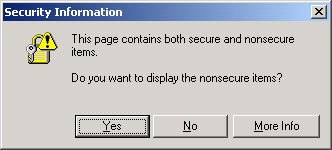
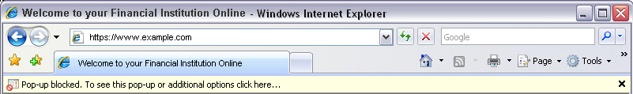
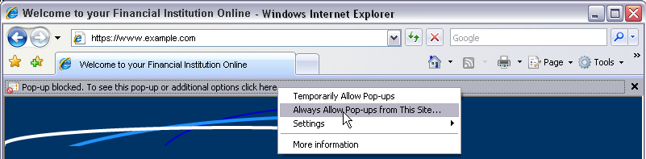
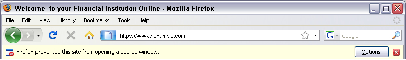
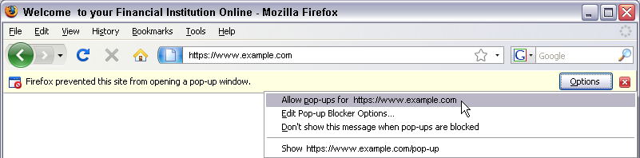

Security refers to preventing unauthorized access to a computer system or network. Internet Banking uses several
layers of technology to prevent unauthorized users from gaining access to the internal network. Internet Banking's
security professionals manage a sophisticated networking architecture that includes screening routers, filtering routers,
and firewalls.
The Internet Banking section is automatically secured/encrypted, but the rest of the Website can be accessed as either
secure or unsecure.
Internet Banking is a term for accessing your account information over the Internet. We may refer to it as Internet Account
Access or use a different name.
Your online security is important to us, as well as providing you easy and convenient banking tools. Your online banking
experience may include a new Enhanced Login Security service to further help protect you from identity theft which is known
in the online security industry as Multifactor Authentication, or MFA.
Authentication is the process used to allow access to only the correct customer. Without effective authentication controls,
it is possible for fraudulent users to access your account. We authenticate customers by issuing challenges that only the
true customer should be able to pass.
Multifactor Authentication means that two or more different types (or factors) of authentication must be passed. By using
two different factors of authentication, we get a higher assurance that the customer is the intended user. MFA is
commonly
used to protect transactions at ATMs, where your card is something you have, and your PIN code is something you know.
For your convenience, after you successfully authenticate with your User ID, password and Login Security (One-Time
Passcode (OTP) or Challenge Questions, if available), you may enroll your computer for use in authentication. If you
choose to enroll your computer, a special Browser Cookie will be present on the system, which will act in place of
your phone for something you have in your possession.
We recommend you ensure that your browser settings and any antivirus software you have do not delete your cookies
(data files) so that you are not prompted to provide Login Security (One-Time Passcode (OTP) or Challenge Questions, if
available) every time you log into Internet Banking.
When you choose to enroll your computer as PRIVATE, a special Browser Cookie will be present on the system, which will
act in place of your Login Security (One-Time Passcode (OTP) or Challenge Questions, if available). You will only need
your User ID and password to access your account information.
If you are still getting prompted to provide your Login Security, then please ensure that you have the following:
- Using one of the Recommended Operating Systems for Internet Banking
- Using one of the Recommended Browsers for Internet Banking
- Browser is not set to delete cookies Please follow the steps in listed in this help for your respective browser to
determine if cookies are being deleted
- Any antivirus software is not set to delete cookies
- No viruses or malware on your computer
- No usage of a proxy server or web accelerator by your internet service provider
- If using a computer from work, verify that your office technical department is not automating deletion of cookies
When you choose to list your computer as PUBLIC, you will need to provide your User ID, password and you will be
prompted to provide your Login Security (One-Time Passcode (OTP) or Challenge Questions, if available) each time you
log into your account. We recommend this setting when logging in from a library or school computer.
To ensure security, we recommend the following:
Never reveal your password**.
**Password refers to your telephone access (audio response system, not Bill Payment) password or the password that
you selected when you signed up for Internet Banking. We may alternatively use a different name (e.g. "PIN"). If you have
questions about what to enter in order to access Internet Banking for the first time, contact our Customer Service.
IMPORTANT:
Some browsers allow you to enable a function to require passwords for specific sites or
certifications. In that instance, you should enter the password for the browser.
Passwords are case sensitive. Mixing uppercase and lowercase letters is permitted.
You can change your Internet Banking password under User Options at any time. It is recommended that you change
your password every six months.
WARNING:
|
We do not have access to your password. In the case of a forgotten password and/or challenge questions,
contact our Customer Service and ask them to reset your password for Internet Banking.
Use the Sign Off icon to end a Internet Banking session. This will securely close out your Internet Banking session and expire all the cookies that were set in your
session. Do not use the Back key.
IMPORTANT:
If you do not exit the browser, the browser will allow you to use the Back key to get back into your
Internet Banking session should you wish to explore another site.
It is recommended that you balance your account at least once a month so that any discrepancies can be reported in a
timely manner.
Recommended Operating Systems
- Windows Vista
- Windows 7, 8.1, 10
- Macintosh OS X
Internet Banking is optimized to use with certified/recommended operating systems. By using a different operating system, you may not be able to take full advantage of all the features within Internet Banking. Click here for a list of recommended browsers.
Cookies are small text files on your system, used to keep track of settings or data for a particular site. Web sites can use cookies to identify a returning user or to pass information between Web pages in a single visit.
There are two types of cookies: temporary and permanent. Temporary cookies are used and tracked by the browser to pass information and are deleted once the browser is shut down. Permanent cookies are stored on your system and can be accessed again for multiple visits. Permanent cookies usually have an expiration date and will be automatically deleted from your system at that time. Internet Banking uses temporary cookies and may use permanent cookies, but never passes private information through cookies.
An example of how Internet Banking uses a temporary cookie is in the demo. The browser uses the cookie to either show or hide the overview depending on the user's choice. Every time the demo is used, that cookie will be used and deleted once the demo is exited or the browser is shut down.
Internet Banking also uses a different kind of temporary cookie known as a session cookie, a non-persistent cookie, or a pre-expired cookie. This cookie is used as part of the stringent security measures in Internet Banking to make sure that each page in Internet Banking is not cached or saved on your system. This means that each page must be retrieved from the Web server. This cookie is deleted when a user logs or times out of Internet Banking or if the browser window is closed and ensures that another user on the same computer cannot access the previous user's Internet Banking session or information.
If you use Enhanced Security, Internet Banking may place a secure permanent cookie on your computer. This secure cookie is unique, and when used in combination with your login information, creates a unique way to identify you to the system. For every login attempt after you add extra security to a computer, this secure cookie is validated along with the login identification you normally enter. This secure cookie is only used to validate your identity and does not contain any personal information.
Why We Collect Information
When you visit this site, we gather two different types of information, anonymous statistics collected by our web servers through "log files" which help us monitor our website and improve our services; and personal information, such as name, address and phone number, so we can identify you and complete the requests you initiate.
How We Collect Information
Anonymous Statistics: We collect and are the sole owner of the following information which is collected from all of our website users. We do not use "cookies" to collect this information. We use log files to collect:
- Internet Provider address of requestor
- Name of web pages and images requested from the site
- Referring URL, if it is available
- Failed log-on attempts are recorded for security purposes.
Personal Information: In areas of website detailed below, we also gather your personal information on registration or application forms, in order to complete requests initiated and authorized by you. For example, if you request information, we collect your name, mailing address, email address, phone and fax numbers, and other optional information so we can complete your request. You always have the option to provide information through another communication method, such as telephone.
What Information We Share
We will share your personal information internally for the purpose of performing a transaction requested by you and for administering business.
When required by law, we will provide information about you to third parties without your consent; for example, to respond to a subpoena or court order, or judicial or regulatory process. Occasionally, we will provide your personal information to third parties who are under agreement with us to help perform your requested transactions. These companies are obligated to maintain the confidentiality of your personal information that is provided to them through our website. Your personal information will not be used for any purpose other than to help fulfill your request.
Other Considerations
Our website may contain links to other websites. We are not responsible for the privacy practices or the content of the linked websites and encourage you to fully review those third parties' privacy and security statements, because they may differ from ours.
We reserve the right to modify this Privacy Statement at any time. If the modification materially affects your personal information, we will post a prominent notice on our website which will notify you of the change. This Privacy Statement is for general guidance and does not constitute a contract, and does not modify or amend any agreement we have with our customers.
JavaScript is a widely accepted, simple programming language that allows a Web site to be more interactive. Web sites can use JavaScript to perform many actions such has calculations, displaying dynamic navigation, and rotating through banner images. By using JavaScript, Web sites can be proactive by making a better internet experience.
An example use of JavaScript in Internet Banking is form validation. Validation is simply enforcing certain rules on different fields. When presented with a phone number field, JavaScript can alert the user if the phone number format is incorrect or if a value in the field is not a number. This allows the form to be filled out and submitted correctly the first time.
If JavaScript is not enabled, some or all of the Internet Banking features may not work. In most browsers, JavaScript is enabled through the adjustment in Security Settings. Please refer to the specific section for your browser by clicking on the link located in the index at the top of the page.
Before initiating your Internet Banking, we first require that a "secure session" is established using Secure Socket Layer (SSL) encryption. This is a process where the information between our server and your browser is encrypted or scrambled so it cannot be read by unauthorized parties.
A general indicator that you have entered a secure session is when the URL (web page address)
in the address bar starts with "https" (note the "s" at the end) rather than "http", your session
is secure.
The content of a Web site is created to be best viewed in a range of display sizes or screen resolutions. The display size
maximum is determined by your monitor's maximum display area (by maximizing your browser window) and the display size minimum
is user controlled by resizing the window to be smaller then the maximum area allowed.
By viewing a Web site at or above the recommended display size or screen resolution all the Web site content can be seen
without scrolling left to right. Each Web site will vary with their recommended display size or screen resolution, but the
most recommended browser display size is 1024 width by 768 height (1024 x 768).
Your monitor's display size, sometimes referred to as the desktop area is a setting controlled by your Operating System.
Please refer to your Operating System documentation on how to determine and change your display size.
|
Adobe Acrobat Reader is a free browser plug-in that can read certain document file types known as PDF (portable document format). Having this plug-in allows you to read a PDF file from your browser window rather than having to open the Adobe Acrobat program to read the file. If you need Adobe Acrobat Reader,
click here and follow the directions on Adobe's Web site.
Internet Banking most commonly uses PDF files for Online Statements and Check Images.
Recommended Browsers
- Microsoft Internet Explorer
- Google Chrome
- Mozilla Firefox
- Safari
Our site is optimized for use with certified/recommended browsers. If you use a different browser, you
may not be able to take full advantage of all the features of the site. In addition, if America Online
(AOL) is embedded within a certified browser, it is also considered to be supported. Otherwise, AOL is no
longer a recommended or supported browser and has not been tested as thoroughly as a recommended browser.
Be sure to select a recommended or supported version when downloading at the following locations:
Microsoft Internet Explorer Download:
http://windows.microsoft.com/en-us/internet-explorer/download-ie
Google Chrome:
http://www.google.com/chrome
Mozilla Firefox Download:
https://www.mozilla.org/en-US/firefox/new
Safari Download:
http://www.apple.com/support/downloads
Deleting Cookies or Temporary Internet Files
WARNING! MFA Impact - Doing this will cause an end user to be challenged at log in on an authorized computer.
You may have a setting on that will delete cookies AUTOMATICALLY and will need to change that setting in order to more easily access online banking (skip entering the verification code).
Blocking Cookies
If desired, a user may choose to block cookies. If this option is chosen, the user can allow only specific sites to place cookies by using the "manage exceptions" option. Adding the URL of the Online Banking site here would allow the user to block other sites from placing cookies, while allowing Online Banking to remember the user's personal computer as a trusted access point.
Block pop-up windows:
It is recommended that "Block pop-up windows" be turned OFF because Internet Banking utilizes pop-up windows (e.g. Printer Friendly window, etc.).
Cookies
If you are using Internet Explorer, you may be deleting your cookies automatically and will need to change that
setting in order to more easily access online banking (skip entering the verification code).
- To properly access Online Banking solutions you will need to enable first-party and third-party cookies.
- Open your browser, click on "Tools" (also known as Gear icon).
- Select "Internet Options".
- In the "General" tab, under the heading "Browsing history", uncheck the "Delete browsing history on exit" checkbox.
- Click on the "Privacy" tab.
- Click the "Advanced" button.
- Select the "Override Automatic Cookie Handling" checkbox.
- Select "First-party Cookies" and "Third-party Cookies"
- Select the "Always Allow Session Cookies" checkbox.
- Click the "OK" button.
Security
- Open your browser, click on "Tools" (also known as Gear icon).
- Select "Internet Options".
- Click on the "Security" tab.
- Set the Security Level for the Internet Zone to Medium-high. (if slider bar is not available, click on the button "Default Level").
- Click the "OK" button.
- Click on the "Privacy" tab.
- Set the Privacy Setting to "Medium".
- Click on the button "Advanced".
- Put a check mark next to "Override Automatic Cookie Handling".
- Under First-party Cookies make sure the radio button is set to "Accept".
- Under Third-party Cookies make sure the radio button is set to "Accept".
- Put a check mark next to "Always Allow Session Cookies".
- Click the "OK" button.
- Click on the "Advanced" tab.
- Under Security make sure the checkbox for "Do not save encrypted pages to disk" is blank.
- Under the Security Section, put a check mark next to "Use TLS 1.0, 1.1, and 1.2".
- Click on "OK" until exited completely from options.
- Then close all browser windows (resets the IE browser settings) and start up the browser again.
- From the menu bar, click on "Tools".
- From the Tools menu, select "Options".
- In the Options window, select the "Privacy" icon
- Check If the "Firefox will" dropdown option is "Never remember history," cookies will be deleted from the browser upon browser close; if user is experiencing trouble with the MFA cookie, you can change the option to "Remember history" so that the cookie remains between sessions.
- If the "Firefox will" dropdown option is "Use custom settings for history," ensure that both the "Accept cookies from sites" and "Accept third-party cookies" boxes are checked (ON) and the "Keep until" dropdown option value is "they expire."
- In the Options window, select the "Content" icon.
- Uncheck (OFF) the checkbox for "Block Popup Windows". Or if you choose to have it checked (ON), be sure to add your FI's domain to the list of Allowed Sites.
- Click on OK button to close the Options window.
- From the menu bar, click/select the Safari menu.
- From the Safari menu, select "Preferences".
- In the Preferences window, click the "Security" icon/tab.
- In the "Web Content" section,
- Click (ON) the checkbox for "Enable plug-ins".
- Click (ON) the checkbox for "Enable Java".
- Click (ON) the checkbox for "Enable JavaScript".
- Unclick (OFF) the checkbox for Block popup windows.
- In the "Accept Cookies" section, select the "Always" radio button.
- In the Preferences window, click the "AutoFill" icon/tab.
- Unclick (OFF) the checkbox for "User names and passwords".
- Close the Preferences window.
- From the Tools icon select "Settings".
- Under the "Privacy" section, select "Content settings".
- Cookies: Allow local data to be set (recommended).
If desired, a user may choose to block cookies. If this option is chosen, the user can allow only specific sites to place cookies by using the "manage exceptions" option. Adding the URL of the Online Banking site here would allow the user to block other sites from placing cookies, while allowing Online Banking to remember the user's personal computer as a trusted access point.
- JavaScript: Allow all sites to run JavaScript (recommended).
- Security: From the "Tools" icon select "Settings".
- Click "Show advanced options"
- Click "Change Proxy settings"
- Click on the "Advanced Tab"
- Check the box next to "Check for server certificate revocation"
If you can view the other areas of our Web site, but are unable to access Internet Banking, it may indicate a
problem accessing all secure Web sites. Both your browser and Internet service provider must support secure sites.
This Web site is designed for Microsoft? Internet Explorer or higher,
Mozilla Firefox, or Safari or higher for Macintosh. Using other browsers may cause the Web pages
to appear misaligned and prevent access to Internet Banking.
IMPORTANT: It is highly recommended that the newer browsers be used to access Internet Banking.
If you are using one of the browsers mentioned above and are still experiencing a problem, the problem may lie
with the Internet service provider. This is particularly common with employer-based access to the Internet. Your
employer may have firewalls, proxy servers, or other equipment that may prevent access to secured sites. Contact
your company's Data Processing Department regarding the problem or try to access Internet Banking from another location.
IMPORTANT: When reporting problems to our Customer Service, have as much information ready as possible
(e.g., browser version, etc.).
Receiving the following message after logging in successfully will stop all further processing and/or access to
any portion of Internet Banking during this session: "Internet Account Access Session Error." Return to
the login screen to start a new session. This error indicates that you did not accept one or more cookies. In order
to enter the secured encrypted site you must accept the cookies. Since there are several within Internet Banking, it is
suggested that you disable the cookie alert within your browser while viewing account information.
IMPORTANT: If you are prompted with a dialog box that asks you to re-enter your password, (after initially entering your User ID and Internet Banking password), your browser may not support JavaScriptTM, or JavaScriptTM may not be enabled. An upgrade may be necessary.
If you have upgraded your browser, the "Enable JavaScript" function may be disabled. It will need to be enabled from the Browser's Tools menu.
Click here for instructions.
Internet Explorer Content Advisor
Users that have Content Advisor enabled in Internet Explorer will require some changes that need to be made in order to
use Internet Banking.
- Click on Tools.
- Select "Internet Options"
- Select the "Content" tab
- Select "Settings" and input the Content Supervisor password. (The password was created when Enabling the Content Advisor, if you have forgotten this password contact Microsoft)
- Select "Approved Sites"
- Copy and paste the entire login page URL,
For example: www.myfi.com/onlinserv/HB
- Select "Always" and then click "Apply"
- Click "OK" to close the Window.
- When logging into Internet Banking, you may see the following message box:

- Select "Yes" to continue.
Additional Third Party Software (TPV)
Due to increased security, certain third party toolbars/software may prevent end user access into Internet Banking. This can also include some types of pop-up blockers. In order to log into Internet Banking, this software may need to be disabled or uninstalled. Please refer to the third party vendor instructions for information on how to perform these steps.
Spyware/Adware
Due to increased security, certain spyware/adware may also prevent access into Internet Banking. In order to log into Internet Banking, users must remove this type of software from their computer.
Spyware is Internet jargon for advertising supported software (Adware). It is a way for shareware authors to make money from a product, other than by selling it to the users. Adware typically reports your Internet surfing habits back to a third party site for data collection purposes. In order to protect your financial privacy, it may be necessary to install a spyware/adware search tool to determine if your computer has any of this software installed. If you determine that adware or spyware has been installed on your computer, the software will need to be removed.
Some of the services we offer open in pop-up windows. If you find that these do not display, they are probably blocked by your Web browser, a browser toolbar, or another Internet security tool. We assure you that it is safe and secure to allow pop-ups for this site and recommend you do so to access all of our services.
Listed below are some of the most popular browsers and pop-up blockers. To enable pop-up windows for this site, please select the browser or tool you are using and follow the instructions provided.
Internet Explorer
Firefox
Safari
Google Chrome
Third-party pop-up blockers
Internet Explorer
If you have the latest updates from Microsoft on your computer, you will likely see a message appear automatically in your browser when a pop-up window is blocked (see image below).

- Click on the yellow bar that appears in your browser.
- When the menu appears, select Always Allow Pop-ups from This Site.
- A dialog box will appear asking you to confirm. Click Yes.
- The page will refresh and you can now click the link for the service that was blocked earlier.

If you do not see a pop-up message appear automatically in your browser, you can still allow pop-ups for our site by changing the setting through the Tools menu.
Firefox
If you are running the latest version for Firefox, you will likely see a message appear automatically in your browser when a pop-up window is blocked (see image below).

- Click on the yellow bar that appears in your browser.
- When the menu appears, select Allow pop-ups for... Our address will appear here so that you know you are
allowing pop-ups for the right site.
- A dialog box will appear asking you to confirm. Click Yes.
- The page will refresh and you can now click the link for the service that was blocked earlier.

If you do not see a pop-up message appear automatically in your browser, you can still allow pop-ups for our site by
doing the following:
- Go to the Tools menu and select Options (For Macintosh users, select Preferences).
- Click the Content tab (If on an older version, click Web Features).
- On the same line as to the text Block pop-up windows click the button labeled Exceptions (If on
an older version, click Allowed Sites).
- Enter the address of our site in the Address of Web Site field.
- Click the Allow button (or the Enable button, depending on your version).
- Click the Close button to save the changes.
- Click OK to close the Options window.
- You can now click the link for the service that was blocked earlier.
If you still do not see the service open in a pop-up window, you may have another third-party tool blocking pop-ups t
hat you also need to modify in order to use the service (
see below).
Safari
For Macintosh users, in order to disable the pop-up blocker in Safari:
- Open the Safari menu and select the Preferences option.
- Uncheck Block pop-up windows.
For Windows users, in order to disable the pop-up blocker in Safari:
- Open the Edit menu and select the Preferences option.
- Click on the Security tab.
- Uncheck Block pop-up windows.
You can now click the link for the service that was blocked earlier. Once you are finished with our online services, you can turn
the pop-up blocker back on if you wish to keep it active for other sites.
If the option was not checked, or if you still do not see the service open in a pop-up window, you may have another third-party tool
blocking pop-ups that you also need to modify in order to use the service (
see below).
Google Chrome
If you are running the latest version for Google Chrome, you will likely see a message appear automatically in your browser
when a pop-up window is blocked. In order to disable the pop-up blocker in Google Chrome:
- From the Tools icon (wrench) select Options.
- From the Options menu select Under the Hood.
- From the Privacy menu select Content settings.
- Pop-ups: Allow all sites to show pop-ups.
You can now click the link for the service that was blocked earlier. Once you are finished with our online services, you can turn
the pop-up blocker back on if you wish to keep it active for other sites.
If the option was not checked, or if you still do not see the service open in a pop-up window, you may have another third-party
tool blocking pop-ups that you also need to modify in order to use the service (
see below).
Third-party pop-up blockers
Some of the most common pop-up blockers are listed below. Please select or view the tool you are using and follow the instructions provided.
Google Toolbar
Yahoo! Toolbar (Search for "pop-up blocker" to find instructions)
Having difficulties viewing the test or not seeing the test results could be due to one or more of the following:
- Pop-up Blocker. If your browser uses a pop-up blocker, please disable it and click on the Test Again link. For more information regarding pop-up blockers please refer to the specific section for your browser by clicking on the link located in the index at the top of the page.
- JavaScript is disabled. If your browser has JavaScript disabled, please enable it and click on the Test Again link. Click here for more information about JavaScript.
- Alternative Browsers. Using an outdated, branded, or non-standard browser might cause test errors. Attempt to run the test on a recommended browser to see if the test can be successfully run. Click here for a list of recommended browsers.
If you are still not able to view the test, please contact our Customer Service for further help.
Error Messages - To show our Customer Service the exact error message that you are receiving, display the error message on your screen then press ALT+Print Screen on your computer's keyboard. This will transfer the image to your clipboard. Open your Word Processor and paste the selection. You can save this file and e-mail it to our Customer Service for support.
When experiencing an error message, try the following steps before contacting our Customer Service:
1. Close the browser.
2. Retry.
3. Delete the Cache, Reload, or Refresh.
After trying this and you still continue to receive the error message, contact our Customer Service.